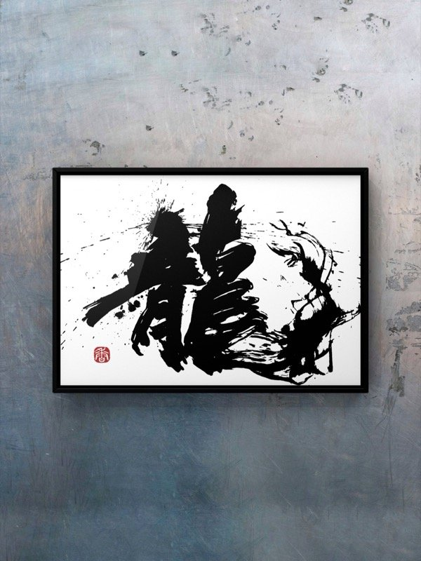

2027運勢
あなただけの2027年と、
あなたを守る一文字。

黒ねこの占い師
くろみつ
待っていましたよ。お名前と生まれた日を教えてください。あなたの2027年を、星と数字で読みましょう。
2027運勢
黒ねこの占い師
くろみつ
待っていましたよ。お名前と生まれた日を教えてください。あなたの2027年を、星と数字で読みましょう。
印刷でも、画像生成でもなく


同じ線は、二度と書けない。
だから、あなたの一文字も、この世にひとつだけ。
書家・夢香：毛筆・硬筆 八段／2026年 麻布十番 初個展。写真は夢香の作品「龍」
あなたの星座をタップ。上半期・下半期・月別まで読めます。
 牡羊座3/21〜4/19すぐ結果が出なくても、大丈夫な理由整
牡羊座3/21〜4/19すぐ結果が出なくても、大丈夫な理由整 牡牛座4/20〜5/20片づけた場所に、何が入ってくる？翔
牡牛座4/20〜5/20片づけた場所に、何が入ってくる？翔 双子座5/21〜6/21羽ばたく準備、もうできていますか満
双子座5/21〜6/21羽ばたく準備、もうできていますか満 蟹座6/22〜7/22配ってきたやさしさが、戻ってくる輝
蟹座6/22〜7/22配ってきたやさしさが、戻ってくる輝 獅子座7/23〜8/22遠慮はいらない、主役の一年開
獅子座7/23〜8/22遠慮はいらない、主役の一年開 乙女座8/23〜9/22夏の終わり、扉はどちらに開く？結
乙女座8/23〜9/22夏の終わり、扉はどちらに開く？結 天秤座9/23〜10/23あなたが結ぶのは、誰とのご縁？深
天秤座9/23〜10/23あなたが結ぶのは、誰とのご縁？深 蠍座10/24〜11/22あなたの本気は、誰に届いている？旅
蠍座10/24〜11/22あなたの本気は、誰に届いている？旅 射手座11/23〜12/21次の扉は、少し遠い場所にある？昇
射手座11/23〜12/21次の扉は、少し遠い場所にある？昇 山羊座12/22〜1/19頼ることも強さになる一年縁
山羊座12/22〜1/19頼ることも強さになる一年縁 水瓶座1/20〜2/18その出会い、思いがけない扉かも潤
水瓶座1/20〜2/18その出会い、思いがけない扉かも潤 魚座2/19〜3/20毎日が少しずつ潤っていく理由
魚座2/19〜3/20毎日が少しずつ潤っていく理由毎日0時に入れかわる、今日一日だけのランキングです。星座をタップすると、今日の運勢が開きます。
鑑定書はご注文から3日以内（待ち受けつきは5日以内）にメールでお届けします。直筆の色紙は1〜2週間以内に発送します。
くろみつの鑑定は、3つの占術と天文計算をもとに、あなたの回答まで読み込んで書いています。ただ、占いは未来を決めるものではなく、毎日を前向きに過ごすためのヒントです。結果を保証するものではありません。
はい。ご加護の待ち受け・色紙・命名書の書は、すべて書家・夢香が筆で書きます。直筆の色紙には落款（印）を押してお届けします。
かかりません。すべて1回ごとのお支払いで、自動で更新されることはありません。
西洋占星術・数秘術・九星気学を読みとく、くろみつ占いの黒ねこの占い師です。鑑定書は、くろみつの言葉でお届けします。
クレジットカードでお支払いいただけます（受付開始まで、もう少しお待ちください）。